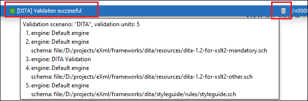

Presenting Validation Errors in Author Mode
By default, Oxygen XML Editor automatically validates documents while editing in the Author mode, and actions are also available to manually validate documents on-request.
Validation Marker Locations
- In the main editing pane, with the issue underlined in a color according to the type of issue.
- In the right-side vertical stripe, with a marker that is colored according to the type of issue.
- For attributes with detected issues, in the Attributes view, with the attribute and its value colored according to the type of issue.
Validation Marker Colors
- Validation Errors [Red] - By default, the underline in the editing pane, the marker in the right vertical stripe, and the foreground color of the attribute in the Attributes view are colored in red.
- Validation Warnings [Yellow] - By default, the underline in the editing pane, the marker in the right vertical stripe, and the foreground color of the attribute in the Attributes view are colored in yellow.
- Validation Info [Blue] - By default, the underline in the editing pane, the marker in the right vertical stripe, and the foreground color of the attribute in the Attributes view are colored in blue.
Validation Markers in the Right-Side Stripe
- Upper Part of the Stripe
- A success indicator square will turn green if the validation is successful or only info messages are found, red if validation errors are found, or yellow if only validation warnings are found. More details about the issues are displayed in a tooltip when you hover over indicator square. If there are numerous problems, only the first three are presented in the tooltip.
- Middle Part of the Stripe
-
Errors are presented with red markers, warnings with yellow markers, and info message with blue markers. If you want to limit the number of markers that are displayed, open the Preferences dialog box , go to , and specify the desired limit in the Maximum number of validation highlights option.
Clicking a marker will highlight the corresponding text area in the editor. The validation message is also displayed both in a tooltip (when hovering over the marker) and in the message area on the bottom of the editor panel (clicking the
 Document checking options button
opens the Document Checking preferences page.
Document checking options button
opens the Document Checking preferences page. - Bottom Part of the Stripe
- Two navigation arrows () can be used to jump
to the next or previous issue. The same actions can be triggered from (Ctrl + Period
(Command + Period on OS X)) and (Ctrl + Comma
(Command + Comma on OS X)). Also, the
 Remove All button can be used
to clear all the validation markers.
Remove All button can be used
to clear all the validation markers.
You can configure the color for each type in the Document Checking preferences page.
Hovering Over Validation Issues
Hovering over a validation issue presents a tooltip message with more details about the problem and possible quick fixes (if available for that issue). Also, when hovering over an issue, pressing F2 will change the focus to the tooltip where you can use Tab and Shift + Tab to navigate between quick fixes and Space to trigger them.
Details About Validation Issues
- Information about the issue is also displayed in the message area on the bottom of the
editor panel (clicking the
 Document
checking options button opens the Document
Checking preferences page where you can configure some validation
options (such as the colors used to present the validation
issues). Some validation messages have an icon (
Document
checking options button opens the Document
Checking preferences page where you can configure some validation
options (such as the colors used to present the validation
issues). Some validation messages have an icon ( ) and clicking it opens a dialog box with additional
information and a link to specifications.
) and clicking it opens a dialog box with additional
information and a link to specifications. - When a validation is processed, information about the
validation scenario is displayed in the stripe at the very bottom of the application. It
includes the name of the validation scenario and the status. If you hover over the
information, a tooltip is presented with more information. You can also click the button to open the Information
view, where even more details are displayed.

- If you want to see all the validation
messages grouped in the Results view, use the
 Validate action from
the toolbar or menu. To see more information about a validation message, right-click the
item in the Results view and select Show
message. Some validation messages have an icon (
Validate action from
the toolbar or menu. To see more information about a validation message, right-click the
item in the Results view and select Show
message. Some validation messages have an icon ( ) in the Info
column and clicking it opens a dialog box with additional information and a link to
specifications.
) in the Info
column and clicking it opens a dialog box with additional information and a link to
specifications.